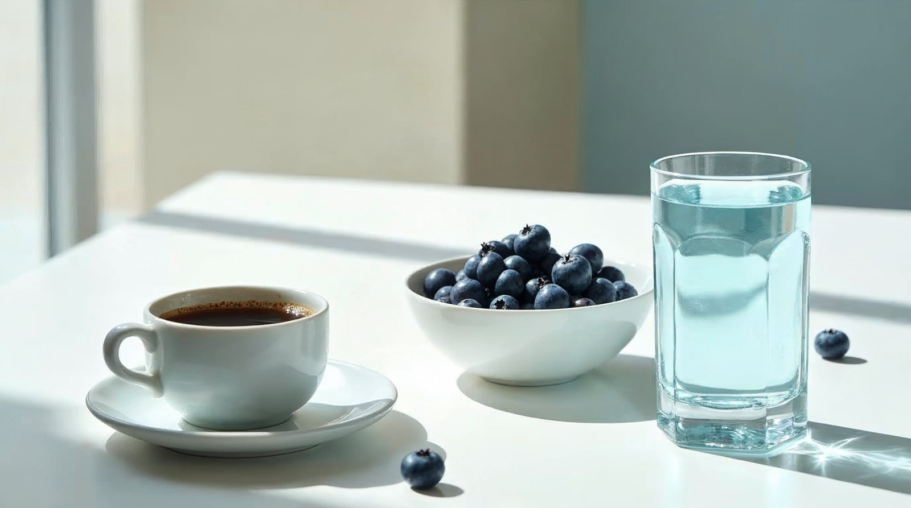
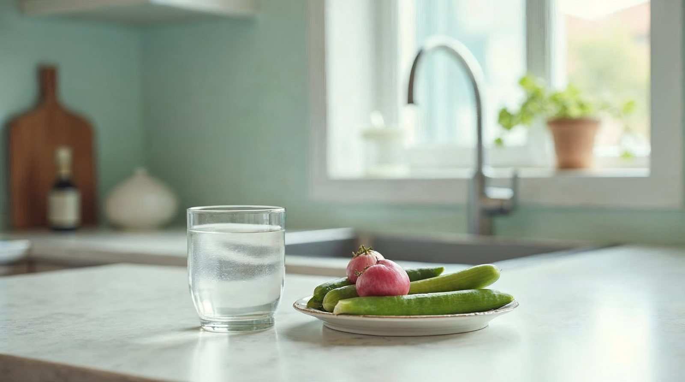
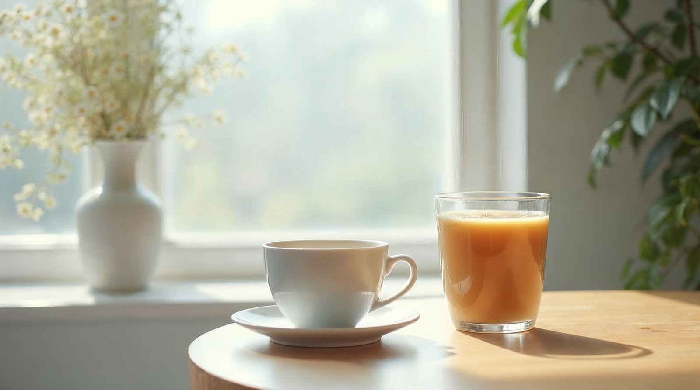
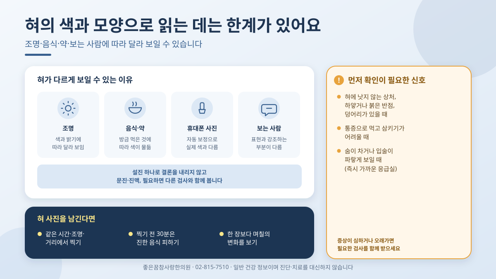

이종호 한의사 감수좋은꿈참사랑한의원 대표원장 (한의사 면허번호 19769)발행 2026-11-23 · 수정 2026-11-26
이 글의 차례
- 왜 혀가 다르게 보일 수 있나요
- 조명과 사진은 혀를 얼마나 바꿔 보이게 하나요?
- 음식과 약은 혀를 어떻게 물들이나요?
- 보는 사람에 따른 차이는 어떻게 줄이나요?
- 혀 사진을 비교하려면 이렇게 남겨 보세요
- 혀를 보며 걱정이 커질 때는
- 왜 같은 혀에 여러 해석이 붙을까요?
- 자주 하는 오해
- 예를 들면 이런 경우입니다
- 먼저 이렇게 여쭙니다
- 일상에서 먼저 해 볼 수 있는 것
- 한의원에서 함께 살필 수 있는 경우
- 아이와 어르신의 혀는 무엇을 더 감안하나요?
- 혀 모습과 함께 말씀해 주시면 좋은 것
- 그렇다면 설진은 어디에 쓸모가 있나요?
- 설진이 다른 검사를 대신하지 않는 이유
- 혀 사진만 보고 상담하기 어려운 이유는 무엇인가요?
- 스스로 점검해 보세요
- 첫 방문 때는 이렇게 합니다
- 며칠 지켜보고, 언제 상담하나요?
- 이렇게 기록해 오시면 상담이 쉬워집니다
- 이런 증상은 먼저 확인이 필요합니다
- 함께 읽으면 좋은 글
혀의 색과 모양으로 몸 상태를 읽는 설진은 쓸모 있는 단서이지만, 조명, 방금 먹은 음식, 복용한 약, 보는 사람에 따라 달라 보일 수 있다는 한계가 있습니다. 그래서 한의원에서는 설진 하나로 결론을 내리지 않고 문진과 진맥, 필요하면 다른 검사를 함께 봅니다. 인터넷의 혀 사진과 비교해 걱정하기 전에 이 한계를 알아 두시면 도움이 됩니다.
왜 혀가 다르게 보일 수 있나요
- 조명 색과 밝기에 따라 혀 색이 다르게 보입니다.
- 방금 마신 음료나 먹은 음식, 복용한 약에 따라 색이 물듭니다.
- 휴대폰 사진은 자동 보정 때문에 실제 색과 다르게 찍힐 수 있습니다.
- 보는 사람마다 표현과 강조하는 부분이 조금씩 다를 수 있습니다.
조명과 사진은 혀를 얼마나 바꿔 보이게 하나요?
같은 혀라도 노란빛 전등 아래에서는 더 붉고 따뜻한 색으로, 흰빛 형광등 아래에서는 더 옅고 창백하게 보입니다. 욕실 거울 앞의 조명과 창가의 햇빛만 비교해 보셔도 차이가 꽤 큽니다.
휴대전화 카메라는 찍을 때마다 밝기와 색을 자동으로 맞추고, 화면마다 색을 보여 주는 방식도 다릅니다. 그래서 어제 찍은 사진과 오늘 찍은 사진의 색이 다르다고 해서 혀가 달라졌다고 보기는 어렵습니다.
플래시를 켜면 혀 표면이 반짝여 물기가 많아 보이고, 너무 가까이 찍으면 갈라짐이 실제보다 깊어 보입니다. 사진으로 비교하고 싶으시다면 같은 장소, 같은 시간, 같은 거리에서 플래시 없이 찍는 것이 그나마 차이를 줄이는 방법입니다.
음식과 약은 혀를 어떻게 물들이나요?
혀는 먹고 마신 것이 그대로 묻어나는 곳이라, 진료 직전의 음식이 혀 색을 크게 바꿔 놓기도 합니다. 흔히 영향을 주는 것들은 이렇습니다.
- 커피, 홍차, 녹차는 설태를 누렇거나 갈색으로 물들일 수 있습니다.
- 카레, 짜장, 포도나 블루베리 주스는 짧은 시간 혀 색을 바꿉니다.
- 색소가 든 사탕, 젤리, 음료는 혀끝을 선명하게 물들입니다.
- 흡연은 설태를 누렇거나 어둡게 보이게 할 수 있습니다.
- 철분제, 일부 위장약, 항생제는 혀나 설태의 색을 바꾸기도 합니다.
이런 영향은 대개 일시적이지만, 모르고 보면 몸 상태로 오해하기 쉽습니다. 그래서 저는 혀를 보기 전에 오늘 드신 것과 드시는 약을 먼저 여쭙고, 그 영향을 뺀 뒤 남는 모습만 단서로 씁니다.
보는 사람에 따른 차이는 어떻게 줄이나요?
보는 사람이 달라지면 같은 혀를 두고도 표현이 조금씩 달라질 수 있습니다. 저는 이 차이를 줄이려고 되도록 같은 밝은 곳에서 혀를 보고, 지난번에 본 모습과 나란히 놓고 비교합니다.
또 혀 모습만으로 이야기를 끝내지 않고, 말씀해 주신 증상과 맥을 함께 맞춰 봅니다. 여러 단서가 같은 쪽을 가리킬 때만 혀 모습에 무게를 두면, 보는 사람의 느낌에 따라 결론이 흔들리는 일을 줄일 수 있습니다.
다른 곳에서 혀에 대해 들은 이야기가 있다면 편하게 말씀해 주세요. 어떤 모습을 보고 그렇게 말했을지 함께 생각해 보고, 지금 혀와 몸 상태와 견주어 봅니다.
혀 사진을 비교하려면 이렇게 남겨 보세요
- 아침에 일어나 물로 한 번 헹군 뒤, 식사 전에 찍습니다.
- 늘 같은 창가에서 자연광으로, 플래시는 끕니다.
- 휴대전화와 얼굴 사이 거리를 비슷하게 맞춥니다.
- 혀는 힘을 빼고 내밀어 혀끝부터 뿌리 쪽까지 담기게 찍습니다.
- 사진 옆에 전날 먹은 것, 잠든 시각, 그날 컨디션을 한 줄 적습니다.
이렇게 남긴 사진은 한 장 한 장을 해석하기보다 여러 장을 나란히 놓고 흐름을 보는 데 씁니다. 진료 때 보여 주시면 직접 본 모습과 함께 참고합니다.
혀를 보며 걱정이 커질 때는
혀는 한번 신경 쓰기 시작하면 하루에도 여러 번 거울을 보게 되고, 볼 때마다 다른 점이 눈에 들어와 걱정이 커지기 쉽습니다. 그럴 때는 혀를 보는 횟수를 하루 한 번, 같은 시간으로 정해 두시길 권합니다.
걱정이 이미 커졌다면 혼자 해석하기보다 무엇이 마음에 걸리는지 적어서 가져와 주세요. 걱정의 계기부터 차근차근 정리하면, 실제로 살펴야 할 것과 그렇지 않은 것이 나뉘어 마음이 한결 가벼워지는 분이 많습니다.
왜 같은 혀에 여러 해석이 붙을까요?
설진은 오랫동안 사람의 눈과 경험으로 이어져 온 관찰법이라, 혀를 보는 기준을 숫자로 정해 두기 어렵습니다. 어떤 분은 혀의 색을, 어떤 분은 설태를 더 중요하게 보기도 합니다.
또 혀 모습 하나는 여러 이유로 생길 수 있습니다. 예를 들어 붉은 혀는 열감 쪽 단서일 수도 있지만, 방금 매운 음식을 먹었거나 혀를 세게 닦은 결과일 수도 있습니다. 이유가 여럿이니 해석도 여럿이 될 수밖에 없습니다.
그래서 저는 혀 모습을 말씀드릴 때 단정하는 말을 피합니다. 대신 이 모습이 보여서 무엇이 궁금한지를 여쭙고, 답을 들은 뒤 맥과 함께 놓고 판단합니다.
자주 하는 오해
- 인터넷 혀 사진과 비슷하면 같은 병이라고 여기기 쉽지만, 사진 속 조명과 상황이 달라 그대로 비교하기 어렵습니다.
- 혀 모습이 하루 달라지면 몸에 큰 변화가 생겼다고 걱정하기 쉽지만, 음식과 잠으로도 쉽게 달라집니다.
- 혀가 깨끗하면 몸에 아무 문제가 없다고 생각하기 쉽지만, 혀가 편해 보여도 다른 불편이 있을 수 있습니다.
- 설진을 잘하면 다른 검사가 필요 없다고 여기기 쉽지만, 필요한 검사는 설진으로 대신하지 않습니다.
예를 들면 이런 경우입니다
- 예를 들어 밤에 욕실 조명 아래에서 혀가 창백해 보여 걱정된 직장인이라면, 다음 날 아침 창가에서 다시 비춰 보고 그래도 같은지부터 확인해 보시길 권합니다.
- 예를 들어 인터넷에서 본 혀 사진 설명 때문에 걱정이 커진 수험생이라면, 어떤 설명이 마음에 걸렸는지 먼저 듣고 지금 몸 상태와 이어지는지 하나씩 맞춰 봅니다.
- 예를 들어 철분제나 위장약을 드시는 어르신이 혀나 설태 색이 어둡게 변했다고 하시는 경우, 약을 드시기 시작한 시기와 색이 변한 시기를 먼저 맞춰 봅니다.

먼저 이렇게 여쭙니다
- 혀의 어떤 모습이 걱정되셨나요? 색인가요, 막인가요, 갈라짐인가요?
- 그 모습을 처음 본 것은 언제이고, 그때 무엇을 먹었나요?
- 혀 모습 말고 함께 느끼는 불편(소화, 입마름, 피로)이 있나요?
- 인터넷에서 본 설명 중 특히 마음에 걸리는 내용이 있나요?

일상에서 먼저 해 볼 수 있는 것
- 혀 사진을 남긴다면 아침 같은 시간, 같은 조명, 같은 거리에서 찍기
- 사진을 찍기 전 30분은 색이 진한 음식과 음료 피하기
- 한 장의 사진으로 걱정하기보다 며칠 동안의 변화를 보기
- 혀 모습과 함께 그날의 컨디션을 한 줄 적어 두기

한의원에서 함께 살필 수 있는 경우
- 혀 사진을 찍어 두셨다면 같은 시간대의 모습으로 함께 보며 변화를 이야기할 수 있습니다.
- 인터넷에서 본 설명 때문에 걱정되는 경우 어떤 점이 걱정인지부터 함께 정리합니다.
- 몸 상태 변화를 기록하고 싶을 때 혀를 포함한 기록 방법을 함께 정합니다.
좋은꿈참사랑한의원에서는 모든 분께 맥부터 짚으며 걱정되는 점과 함께 느끼는 불편을 여쭙고, 필요하다고 판단될 때 진료실에서 직접 혀를 보며 복진과 함께 참고합니다. 같은 혀 모양이라도 증상이 다르면 다르게 살피며, 상태에 맞춰 침이나 한약 상담 등을 정합니다.
아이와 어르신의 혀는 무엇을 더 감안하나요?
아이는 사탕이나 색이 진한 음료, 우유를 먹은 흔적이 혀에 금방 남습니다. 감기로 코가 막혀 입으로 숨을 쉬는 날에는 설태가 두껍고 말라 보이기도 합니다. 그래서 아이의 혀는 오기 전에 먹은 것과 요즘 코 상태를 먼저 여쭌 뒤에 봅니다.
어르신은 틀니, 입마름, 여러 가지 약의 영향이 겹쳐 혀 색과 설태가 평소와 달라 보일 수 있습니다. 혀만 보고 판단하면 이런 영향을 몸 상태로 오해하기 쉬워, 드시는 약 목록과 틀니 사용을 꼭 함께 여쭙습니다.
혀 모습과 함께 말씀해 주시면 좋은 것
혀가 걱정돼 오셨다면 혀 모습만 설명하기보다 함께 겪는 일상을 들려주세요. 요즘 잠은 어떤지, 식사는 제때 하는지, 입이 마르거나 텁텁한지, 피곤이 쌓였는지 같은 이야기입니다.
같은 붉은 혀라도 밤잠을 설치고 입이 마르는 분과, 매운 음식을 즐기는 것 말고는 불편이 없는 분은 다르게 봅니다. 혀는 한 장의 사진이지만, 생활 이야기는 그 사진이 왜 그렇게 찍혔는지 알려 주는 설명서와 같습니다.
그렇다면 설진은 어디에 쓸모가 있나요?
한계가 많다고 해서 설진이 쓸모없다는 뜻은 아닙니다. 저는 설진을 세 가지 이유로 계속 씁니다.
- 말로 설명하기 어려운 몸 상태를 꺼내는 실마리가 됩니다. 혀가 말라 보이면 입마름과 잠을, 설태가 두꺼우면 식사를 여쭤 볼 수 있습니다.
- 맥과 말씀이 가리키는 방향을 한 번 더 확인하는 보조 자료가 됩니다.
- 진료가 이어질 때 같은 조건에서 다시 보며 몸 상태의 흐름을 함께 이야기할 수 있습니다.
결국 설진은 결론을 내려 주는 검사가 아니라 대화를 넓혀 주는 도구라고 생각하시면 가장 정확합니다.
설진이 다른 검사를 대신하지 않는 이유
혀는 몸의 겉모습 가운데 하나라서, 몸속에서 일어나는 일을 직접 보여 주지는 못합니다. 혈액 수치나 영상 검사로 확인해야 하는 일을 혀 색으로 짐작하려 하면, 살펴야 할 것을 놓치거나 쓸데없는 걱정을 키울 수 있습니다.
그래서 저는 혀에서 평소와 다른 모습이 이어지고 다른 증상도 함께 있다면, 혀만 보며 기다리지 않고 필요한 검사와 진료를 함께 권합니다. 이미 받으신 건강검진 결과가 있다면 가져와 주세요. 진맥과 문진, 설진에서 얻은 단서를 그 결과와 맞춰 보며 이야기합니다.
반대로 검사에서 특별한 이상이 없다고 들었지만 입마름이나 텁텁함, 피로가 이어진다면, 그때 설진과 진맥은 생활 속 불편을 이해하는 데 쓸모 있는 단서가 됩니다. 설진은 이렇게 다른 검사와 서로 자리를 나눠 쓰는 도구입니다.
혀 사진만 보고 상담하기 어려운 이유는 무엇인가요?
가끔 혀 사진만 보내 주시며 어떤 상태인지 묻는 분이 계십니다. 마음은 충분히 이해하지만, 사진은 조명과 카메라에 따라 색이 달라지고 혀의 물기나 두께도 제대로 담기지 않아 사진만으로 말씀드리기는 어렵습니다.
무엇보다 혀는 맥과 말씀을 함께 들어야 의미가 생기는 단서입니다. 사진은 진료 때 가져와 주시면 직접 본 모습과 견주는 자료로 소중히 쓰겠습니다. 찍은 날짜와 장소, 그날 먹은 것을 함께 알려 주시면 사진을 읽기가 한결 쉬워집니다. 여러 장이라면 날짜 순서대로 정리해 오셔도 좋습니다.
사진을 찍을 시간이 없었다면 그것도 괜찮습니다. 언제부터 어떤 모습이 신경 쓰였는지 기억나는 대로 말씀해 주시는 것만으로도 상담의 출발점이 충분히 됩니다. 기억이 흐릿하다면 그 시기에 있었던 일, 예를 들어 이사나 시험, 감기 같은 일을 떠올려 보세요.
스스로 점검해 보세요
- 혀 사진을 찍을 때마다 조명이나 장소가 달랐다
- 사진을 찍기 직전에 커피나 색이 진한 음식을 먹었다
- 인터넷 사진과 비교하며 걱정한 적이 있다
- 혀 모습 말고 소화, 입마름, 피로 같은 불편이 함께 있다
- 최근 새로 먹기 시작한 약이나 영양제가 있다
- 혀 모습이 신경 쓰인 지 2주가 넘었다
해당하는 항목이 있다면 진료 때 함께 말씀해 주세요. 체크 결과만으로 몸 상태를 판단하지는 않습니다.
첫 방문 때는 이렇게 합니다
첫 방문에는 원장이 맥을 짚으며 혀에서 걱정되는 점과 그 계기, 함께 느끼는 불편과 잠, 소화, 대소변, 몸의 온기를 여쭙습니다. 혀 사진을 가져오셨다면 찍은 날짜와 조건을 함께 듣고, 진료실의 밝은 곳에서 직접 혀를 봅니다.
사진과 직접 본 모습이 다르면 그 차이가 어디서 왔을지 함께 이야기하고, 지금 상태와 생활에서 먼저 해 볼 것을 설명드립니다. 다음 진료에서는 같은 조건에서 다시 보며 흐름을 비교합니다.
며칠 지켜보고, 언제 상담하나요?
- 다른 불편 없이 혀 색이나 모양만 달라 보인다면, 같은 시간과 조명에서 1~2주 지켜보며 생활을 고르게 해 볼 수 있습니다.
- 2주가 지나도 같은 모습이 이어지고 소화 불편, 입마름, 피로가 함께 있다면 진료 때 상의해 보세요.
이렇게 기록해 오시면 상담이 쉬워집니다
- 같은 조건에서 찍은 혀 사진과 날짜
- 사진을 찍기 전에 먹은 음식과 약
- 그날의 소화, 잠, 피로 상태
- 걱정이 시작된 계기(본 글이나 들은 말)
이런 증상은 먼저 확인이 필요합니다
- 혀에 낫지 않는 상처, 하얗거나 붉은 반점, 덩어리가 있는 경우
- 숨이 차거나 입술·혀가 파랗게 보이는 경우
이런 신호가 있으면 한의원보다 가까운 병원이나 응급실을 먼저 찾으세요.
함께 읽으면 좋은 글

여쭙는 것
- 혀의 어떤 모습이 걱정되셨나요? 색인가요, 막인가요, 갈라짐인가요?
- 그 모습을 처음 본 것은 언제이고, 그때 무엇을 먹었나요?
- 혀 모습 말고 함께 느끼는 불편(소화, 입마름, 피로)이 있나요?
생활에서 해 볼 것
- 혀 사진을 남긴다면 아침 같은 시간, 같은 조명, 같은 거리에서 찍기
- 사진을 찍기 전 30분은 색이 진한 음식과 음료 피하기
- 한 장의 사진으로 걱정하기보다 며칠 동안의 변화를 보기
한의원에서 함께 살필 것
- 혀 사진을 찍어 두셨다면 같은 시간대의 모습으로 함께 보며 변화를 이야기할 수 있습…
- 인터넷에서 본 설명 때문에 걱정되는 경우 어떤 점이 걱정인지부터 함께 정리합니다.
- 몸 상태 변화를 기록하고 싶을 때 혀를 포함한 기록 방법을 함께 정합니다.
먼저 확인이 필요한 신호
- 혀에 낫지 않는 상처, 하얗거나 붉은 반점, 덩어리가 있는 경우
- 숨이 차거나 입술·혀가 파랗게 보이는 경우
한눈에 보는 표
| 구분 | 핵심 |
|---|---|
| 여쭙는 것 | 혀의 어떤 모습이 걱정되셨나요? 색인가요, 막인가요, 갈라짐인가요? 그 모습을 처음 본 것은 언제이고, 그때 무엇을 먹었나요? |
| 생활에서 해 볼 것 | 혀 사진을 남긴다면 아침 같은 시간, 같은 조명, 같은 거리에서 찍기 사진을 찍기 전 30분은 색이 진한 음식과 음료 피하기 |
| 한의원에서 함께 살필 것 | 혀 사진을 찍어 두셨다면 같은 시간대의 모습으로 함께 보며 변화를 이야기할 수 있습니다. 인터넷에서 본 설명 때문에 걱정되는 경우 어떤 점이 걱정인지부터 함께 정리합니다. |
| 먼저 확인이 필요한 신호 | 혀에 낫지 않는 상처, 하얗거나 붉은 반점, 덩어리가 있는 경우 숨이 차거나 입술·혀가 파랗게 보이는 경우 |
자주 묻는 질문
혀 사진을 찍어 가면 도움이 되나요?
같은 조명에서 찍은 사진이라면 참고가 될 수 있지만, 진료실에서 직접 보는 모습을 기준으로 합니다.
설진 결과가 한의원마다 다를 수 있나요?
관찰 기준과 강조하는 부분이 조금 다를 수 있어 표현에 차이가 있을 수 있습니다.
설진만으로 한약을 정하나요?
아닙니다. 진맥 소견과 상담한 증상, 체질적 경향, 복용 중인 약 등을 종합해서 판단합니다.
혀 색이 날마다 달라 보이는데 괜찮은가요?
조명과 음식, 잠에 따라 달라 보이는 일이 흔합니다. 같은 시간과 조명에서 며칠 비교해 보시고, 다른 불편이 함께 있다면 진료 때 말씀해 주세요.
좋은꿈참사랑한의원은 재진 때 지난번 이야기부터 이어서 여쭙니다. 진료시간과 예약은 오시는 길에서 확인하세요.
어디서 상담받을 수 있나요?
좋은꿈참사랑한의원은 서울 동작구 만양로2길 2 신성빌딩 3층·5층(서울 동작구 상도동, 7호선 상도역 3번 출구 근처)에 있습니다. 한의사 3명(이종호 대표원장, 조영기 수석진료원장, 정원영 진료원장)이 진료합니다. 진료시간은 평일 09:30~20:00(점심 13:00~14:00), 토·일·공휴일 09:30~15:00이며, 방문 전 전화로 확인을 권합니다. 예약은 네이버 예약, 카카오톡 상담, 전화 02-815-7510로 받습니다.
이 글은 일반적인 건강 정보이며 개인의 진단이나 치료를 대신하지 않습니다. 증상이 있거나 복용 중인 약이 있다면 진료를 통해 확인하세요. 치료 효과는 개인마다 다를 수 있습니다.
작성 기준: 일반적으로 알려져 있는 건강 정보를 참고해 정리했습니다(대표원장 감수). 증상 기록은 1~2주 동안 하루 1회, 비슷한 시간에 적어 오시면 지난 상태와 비교하기 쉽습니다.